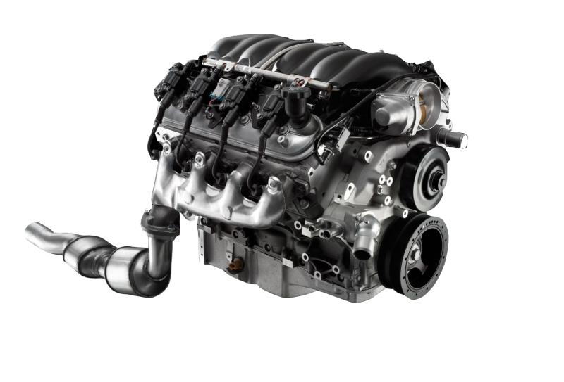
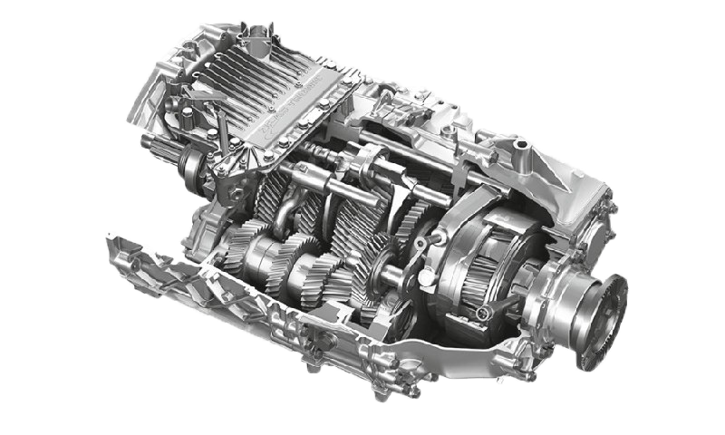
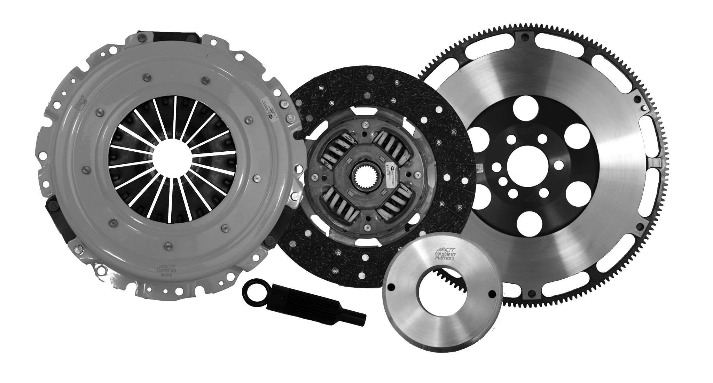
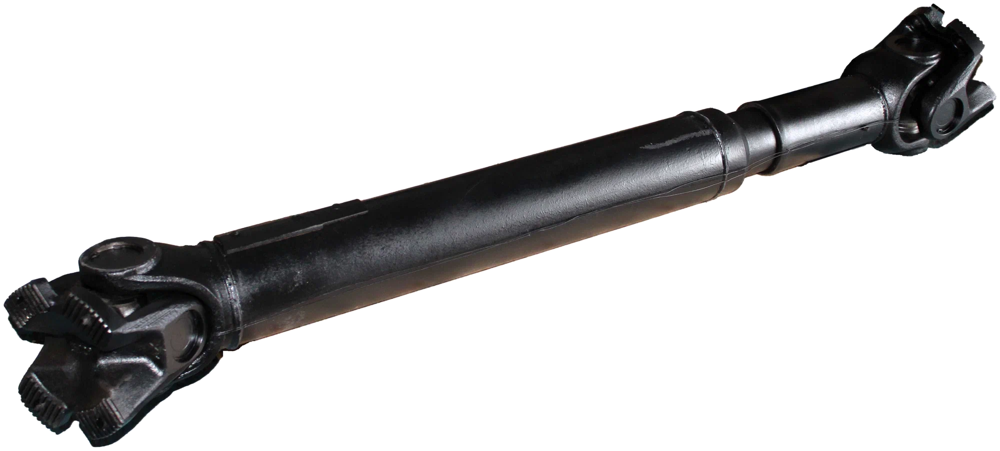
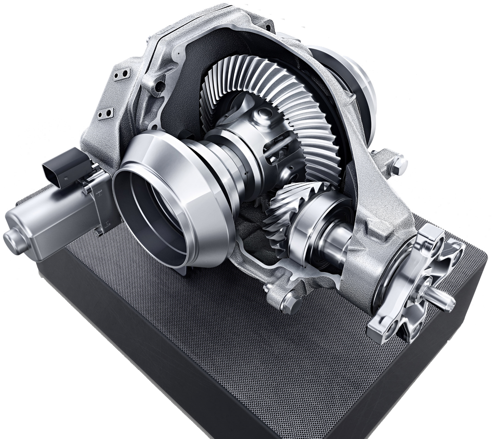
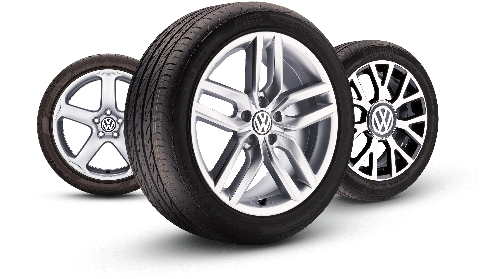
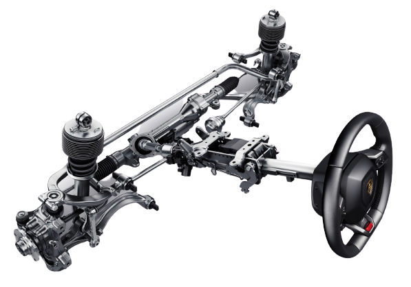

| Компонент | Описание | Изображение |
|---|---|---|
| Двигатель внутреннего сгорания (ДВС) | Преобразует химическую энергию топлива в механическую энергию, вращая коленчатый вал. |  |
| Трансмиссия | Передает крутящий момент от двигателя к колесам, изменяя его величину и направление вращения. |  |
| Сцепление | Обеспечивает плавное включение и выключение трансмиссии. |  |
| Коробка передач | Изменяет передаточное число, позволяя автомобилю двигаться с разной скоростью. | |
| Карданный вал | Передает крутящий момент от коробки передач к заднему мосту (в автомобилях с задним или полным приводом). |  |
| Главная передача | Увеличивает крутящий момент, передаваемый на колеса. |  |
| Дифференциал | Позволяет колесам вращаться с разной скоростью при повороте. |  |
| Колеса | Передают крутящий момент на дорожное полотно, обеспечивая движение автомобиля. |  |
| Система торможения | Обеспечивает остановку автомобиля. |  |
| Система управления | Позволяет водителю управлять направлением движения автомобиля. |  |